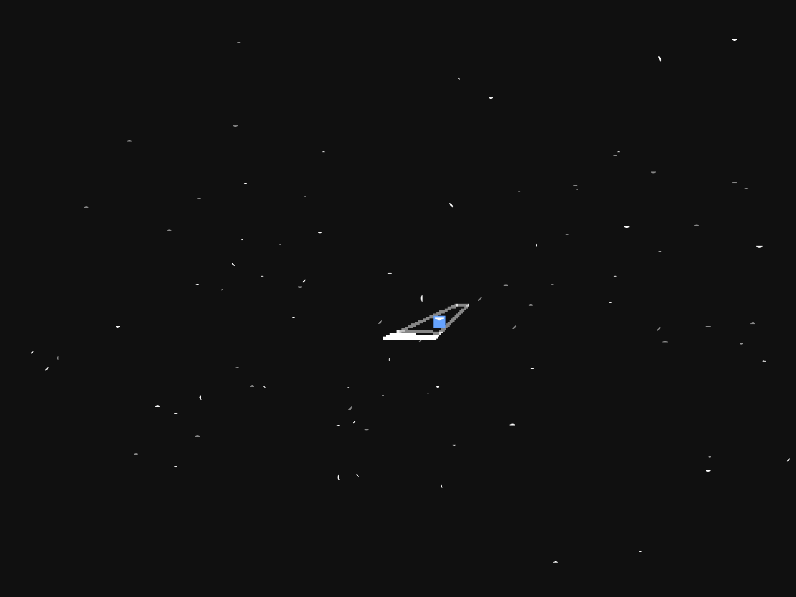
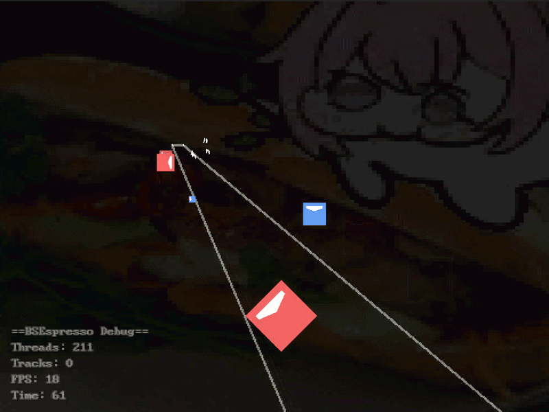

urkimimi
Hamen (2025)
Hamen is a Python library I wrote to help me make Beat Saber modcharts.
It supports everything in the Heck suite from Noodle Extensions to Vivify.
Despite it having broad support with the mods, I wouldn't recommend using it unless you know how to interface with the Heck mod.


Despite it having broad support with the mods, I wouldn't recommend using it unless you know how to interface with the Heck mod.
Blender
Blender is an open source 3D modeling/animation program that has come in handy
for various projects I've done throughout the years. From making simple wallpapers to scaredThin which I have yet to do a write up on.
I've been using the program for about five years for various use cases.


I've been using the program for about five years for various use cases.
Beat Saber Espresso Viewer (2025)
This is a map viewer I wrote in high school using everyones favorite turing complete language, Scratch!
Despite Scratch's limitations (floating point, floored vertex points, etc.), it's fully 3D, supports V2 and V3, and has partial support for Noodle Extensions.
Some of the maps in the photo collage were made by Mawntee.
.png)
.png)
Despite Scratch's limitations (floating point, floored vertex points, etc.), it's fully 3D, supports V2 and V3, and has partial support for Noodle Extensions.
Some of the maps in the photo collage were made by Mawntee.


BSPTK (January 2023 - Present)
This project aims to port BS 0.12.x to platforms like Android, iOS, and more.
The shaders are made from the ground up using AmplifyShaderEditor and are available on Github.
What does the project name mean? I don't know I call it (Beat Saber Porting Torture Kit).


What does the project name mean? I don't know I call it (Beat Saber Porting Torture Kit).